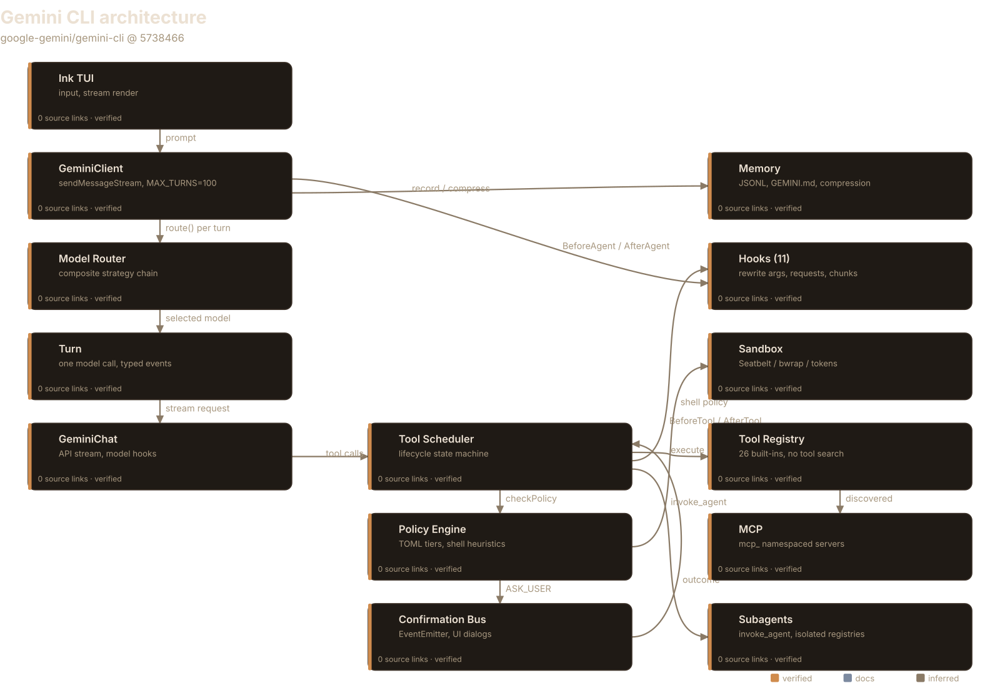
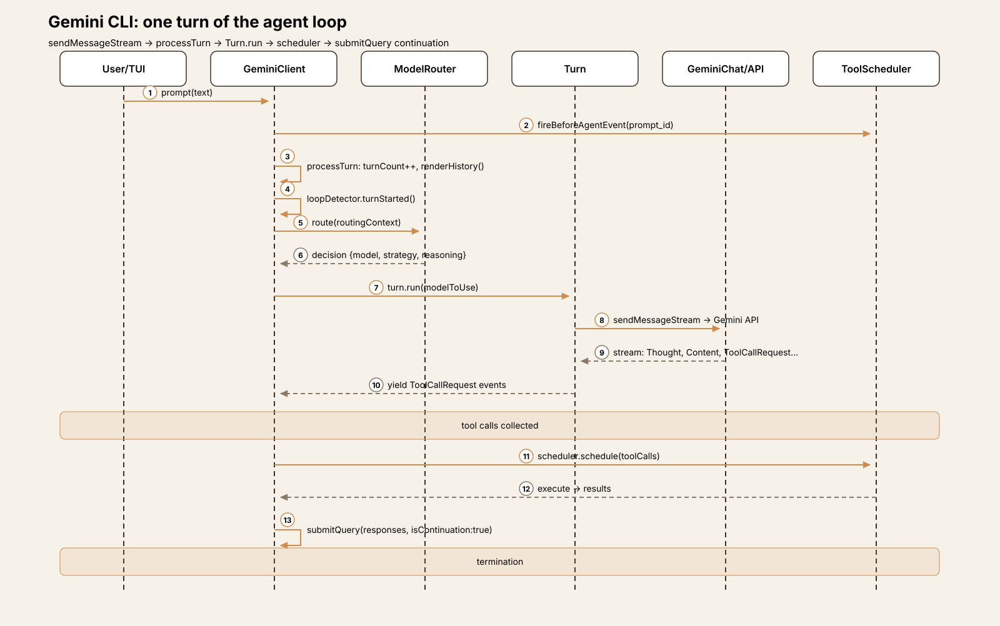
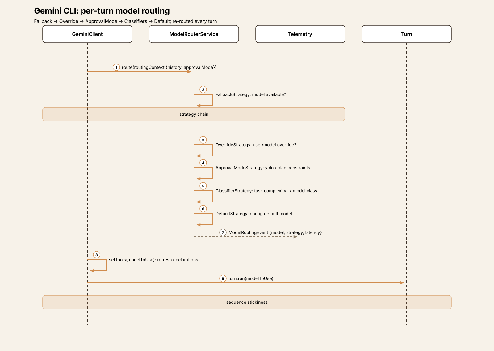
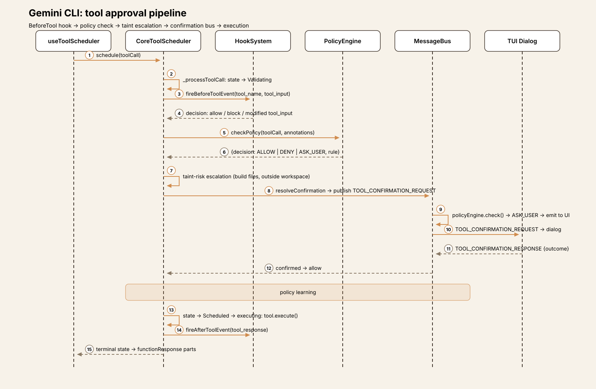
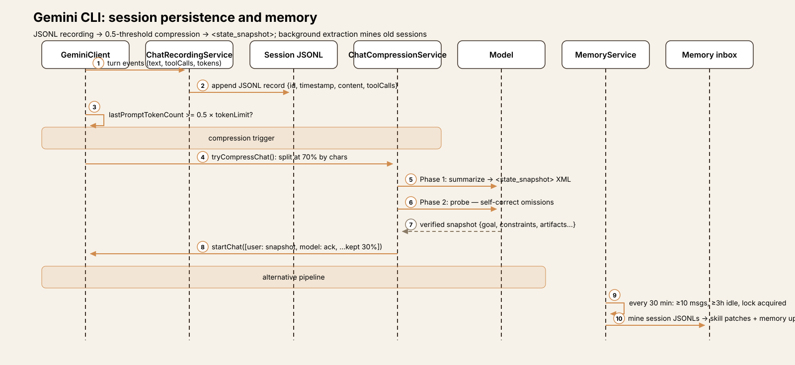
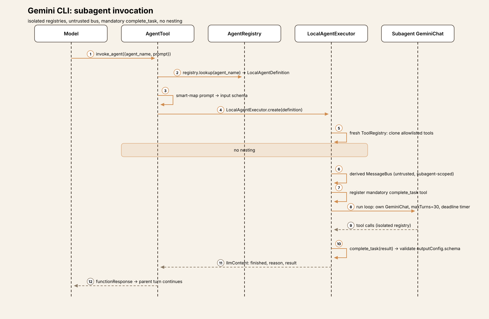

Agent Harness Anatomy #10: Gemini CLI — the routed, policy-gated terminal agent
Series: Agent Harness Anatomy — top-down dissections of real agent harnesses, grounded in verifiable source code. Every behavioral claim below carries a footnote to a pinned GitHub permalink; the full evidence lives in the endnotes.
Version block
- Repo: google-gemini/gemini-cli
- Pinned: tag
v0.63.0→573846625af9e93b3b968e0e0b86bb093a4c9b16(2026-10-06) - Language: TypeScript (npm workspaces monorepo)
- License: Apache-2.0
- Claim under test: "An open-source AI agent that brings the power of Gemini directly into your terminal"

Explore the interactive architecture diagram 14 nodes, 15 edges — pan, zoom, and follow every subsystem linkThe mental model
Every CLI harness in this series so far has been a program with one model, one loop, and one policy. Gemini CLI breaks all three assumptions. It is Google's terminal coding agent — the third lab-built CLI in the series after Codex CLI — and its architecture is organized around delegation: a per-turn model router picks which model answers, a tool scheduler with explicit lifecycle states executes calls, a TOML policy engine with priority tiers decides what needs asking, and eleven hook types let extensions rewrite tool arguments, LLM requests, and even streamed responses mid-flight.1
The governing idea: the core loop doesn't decide much. GeminiClient.sendMessageStream is a thin orchestrator — it checks turn budgets, runs loop detection, asks the router which model to use, and streams events.2 The intelligence lives in the surrounding machinery: the router's composite strategy chain (fallback → override → approval-mode → classifiers → default), the scheduler's Validating → Scheduled → executing → terminal lifecycle, and a confirmation bus that decouples policy decisions from the UI that renders them.3
The tradeoff is machinery for control. Where pi has a loop and extensions, Gemini CLI has a router, a scheduler, a policy engine, a hook system, a context manager, a compression service, a recording service, and a background memory-extraction service — roughly 138,000 lines in packages/core alone.4 You get per-turn model selection, learned approval policies, and eleven interception points; you pay in the number of systems you must understand to predict what a turn will do.
Package map
The repo is an npm workspaces monorepo. For this article five areas matter:5
| Area | Role | Scale |
|---|---|---|
packages/core/src/core/ | The client: GeminiClient, Turn, GeminiChat — the loop | client.ts (1,313 lines), turn.ts, geminiChat.ts (1,881 lines) |
packages/core/src/scheduler/ | Tool execution: lifecycle scheduler, policy, confirmation | scheduler.ts (1,003 lines) |
packages/core/src/tools/ | 26 built-in tools, registry, MCP client | 39 tool files |
packages/core/src/policy/ + safety/ + sandbox/ | TOML policy engine, checkers, per-OS sandboxes | policies/*.toml |
packages/core/src/routing/ | Per-turn model router (composite strategies) | modelRouterService.ts |
packages/core/src/hooks/ | 11 hook event types, command + runtime hooks | hooks/types.ts |
packages/core/src/agents/ | Subagents: registry, invoke_agent, isolated executors | local-executor.ts |
packages/core/src/context/ + services/ | Compression, recording, memory, context manager | chatCompressionService.ts |
packages/cli/src/ | Ink TUI, non-interactive mode, ACP, stream consumption | 364 files |
The core loop
The loop lives in GeminiClient.sendMessageStream (packages/core/src/core/client.ts:908). Its shape:6
const MAX_TURNS = 100; // client.ts:79
async *sendMessageStream(request, signal, prompt_id, turns = MAX_TURNS, ...) {
// ... hooks, loop-detector reset ...
const boundedTurns = Math.min(turns, MAX_TURNS);
let turn = new Turn(this.getChat(), prompt_id);
turn = yield* this.processTurn(request, signal, prompt_id, boundedTurns, ...);
// ... AfterAgent hooks, continuation handling ...
}processTurn (client.ts:627) does the per-turn work: increment the session turn counter (bail with MaxSessionTurns if exceeded), render history through the context manager, check for context overflow, consult the loop detector, then route the model:7
const router = this.config.getModelRouterService();
const decision = await router.route(routingContext);
modelToUse = decision.model;
// ... unless currentSequenceModel is sticky from a previous turnThe router itself is a composite strategy chain — order matters: FallbackStrategy → OverrideStrategy → ApprovalModeStrategy → GemmaClassifierStrategy (opt-in) → ClassifierStrategy → NumericalClassifierStrategy → DefaultStrategy.8 Every turn re-routes unless a sequence model is pinned, which means the model answering turn N+1 can differ from turn N — by design, not accident.
Turn.run (core/turn.ts:271) streams one model call and yields typed events: Thought, Content, ToolCallRequest (one per function call, accumulated in pendingToolCalls), Citation, Finished, Retry, Error.9 Function-call IDs are synthesized as ${name}__${rawCallId} when the API doesn't supply one.10
Tool calls don't execute in core. The CLI's useGeminiStream hook collects ToolCallRequest events, then useToolScheduler.scheduleToolCalls hands them to the core scheduler; when the batch completes, handleCompletedTools calls submitQuery(responsesToSend, { isContinuation: true }), which re-enters sendMessageStream with functionResponse parts.11 The loop is split across the package boundary: core streams and decides, the CLI schedules and feeds back.
Termination comes from five directions: no pending tool calls (plus a next-speaker LLM check — see trace), MAX_TURNS (100), the loop detector (repeated event patterns), MaxSessionTurns, or user abort.12 The next-speaker check is the subtle one: when a turn ends with no tool calls, a separate LLM call decides whether the model should continue ("Please continue.") or the turn is done.13 And if the model returns empty text after executing tools, the CLI auto-nudges: "[System: You successfully executed a tool but returned an empty response. Please analyze the tool output...]".14


Trace one turn
Trace Summarize the changes in this repo through the interactive CLI:15
- Input. The Ink TUI captures the prompt;
submitQuerycallsgeminiClient.sendMessageStream(request, signal, prompt_id).BeforeAgenthooks fire once perprompt_id(dedup-guarded); a hook can stop the turn, block it, or inject<hook_context>.16 - Turn budget.
processTurnincrementssessionTurnCountand bails withMaxSessionTurnsif the session cap is exceeded. The context manager renders history (or the legacy path compresses if over threshold).boundedTurns = Math.min(turns, 100).17 - Loop guard.
loopDetector.turnStarted()— repeated prompt patterns abort here withLoopDetectedbefore the model is ever called.18 - Route the model. The composite strategy chain picks the model for this turn; the decision (model, source strategy, latency, reasoning) is telemetry-logged as a
ModelRoutingEvent.19setTools(modelToUse)refreshes model-dependent tool descriptions. - Model call.
Turn.run→GeminiChat.sendMessageStream→ the Gemini API.BeforeModelhooks can rewrite the outgoing request (model, config, contents);AfterModelhooks see each streamed chunk and can replace it.20 The model emits text plus arun_shell_commandcall (git log --oneline -10). - Tool request.
TurnyieldsToolCallRequest; the CLI collects it andscheduleToolCallsenqueues it in the core scheduler. The scheduler moves it through lifecycle states:Validating→ (policy + confirmation) →Scheduled→ executing → terminal.21 - Approval.
_processToolCall:BeforeToolhook first (can rewrite args — flaggedinputModifiedByHook— or force ask), thencheckPolicy(ALLOW/DENY/ASK_USER from the TOML engine), then taint-risk escalation (build-file edits force ASK_USER), thenresolveConfirmationover the message bus → the TUI dialog. "Always allow" publishesUPDATE_POLICY, persisting to the autosaved TOML.22 - Execute and feed back. The tool runs; output is truncated if over threshold and converted to
functionResponseparts.handleCompletedToolscallssubmitQuery(responses, {isContinuation: true})→ back to step 2 withboundedTurns - 1. When a turn ends with no tool calls, the next-speaker check decides: model continues or turn ends.23

Play the 8-step trace One turn through Gemini CLI — input, turn budget, loop guard, routing, model call, scheduling, approval, executionSubsystem inventory
Tool system. 26 built-in tools in the main registry (read_file, replace, write_file, run_shell_command, grep_search, glob, web_fetch, google_web_search, ask_user, write_todos, invoke_agent, plan-mode tools, tracker tools, background-process tools, MCP resource tools).24 ToolRegistry.sortTools() orders by priority: 0 = built-in, 1 = project-discovered, 2 = MCP.25 There is no tool search or dynamic retrieval — every active tool is serialized into getFunctionDeclarations() and sent to the model on every turn.26 Every object-typed schema gets an injected wait_for_previous boolean so the model can force sequential execution.27 Tool declarations are model-family-aware: CoreToolSet maps families (default-legacy, gemini-3) to per-tool declaration overrides.28
Policy engine. TOML rules with match dimensions (tool name/wildcards, args regex, annotations, approval-mode scoping, interactivity) sorted by priority — first match wins.29 Priority tiers are structural: Default=1 < Extension=2 < Workspace=3 < User=4 < Admin=5, so an admin rule always beats a user rule regardless of numeric priority.30 Bundled policies cover read-only allows, write asks, yolo/headless/plan-mode behavior, and a sandbox default.31 Shell commands get special treatment: wrappers stripped, compound commands split and each subcommand recursively checked, redirections downgrade ALLOW → ASK_USER, dangerous commands force ASK_USER.32 Extension-supplied policies are sanitized — ALLOW rules and yolo-mode rules are dropped.33
Confirmation bus. MessageBus (an EventEmitter) decouples policy from UI: tools publish TOOL_CONFIRMATION_REQUEST with a correlation ID; the bus runs the policy engine first, then auto-responds (ALLOW/DENY) or emits to subscribers (the TUI dialog, ACP sessions).34 Subagent buses are untrusted — forcedDecision and server names are stripped before forwarding to the parent bus, preventing policy bypass.35 Confirmation requests time out after 30s, defaulting to ask.36
Safety checkers. Named checkers attach to tool calls and run after the policy decision; failures fail closed to DENY.37 Two in-process checkers (allowed-path, conseca) plus external checkers spawned as child processes with a JSON protocol (5s timeout, any failure → DENY).38 Conseca is the notable one: a Gemini Flash model generates a least-privilege per-tool security policy from the conversation, then enforces it per call — an LLM-written, LLM-enforced policy. It's gated behind a setting, default off, and fail-open when disabled.39
Sandbox. Per-OS managers: macOS Seatbelt (strict-allowlist SBPL profile, (deny default)), Linux bubblewrap (--unshare-all, --ro-bind / /), Windows restricted tokens + job objects via a C# helper.40 Sandbox TOML configures per-mode (plan/default/accepting_edits) network, readonly, and approved tools.41
Model router. Covered in the loop section — the composite strategy chain is the distinctive mechanism. Worth adding: routing decisions are telemetry-logged with source strategy and reasoning, so routing is auditable after the fact.42
Memory. Sessions persist as JSONL under ~/.gemini/tmp/<projectHash>/chats/ — one JSON object per line, full API parts, tool-call records with token summaries; $rewindTo records support history truncation on resume.43 Two compaction paths: the legacy ChatCompressionService (triggers at 0.5 × token limit, summarizes the oldest 70% into a structured <state_snapshot> XML with a two-pass self-correction probe, keeps the newest 30% verbatim)44 and the experimental opt-in ContextManager (65k-token budget, node aging, async snapshot pipeline).45 Cross-session memory is GEMINI.md files in four tiers: global → system instruction; extension + project → first-user-message bootstrap; per-directory → JIT injection into tool output on path access.46 No vector DB, no SQLite, no embeddings — memory is markdown concatenated into the prompt.47 A background extraction service mines old session JSONLs (every 30 min, ≥10 user messages, ≥3h idle, lock-coordinated across CLI instances) proposing skill patches and memory updates.48

Hooks. 11 event types: BeforeTool / AfterTool, BeforeAgent / AfterAgent, BeforeModel / AfterModel, BeforeToolSelection, Notification, SessionStart / SessionEnd, PreCompress.49 Command hooks (shell subprocess, JSON over stdin, 60s timeout) or runtime hooks (in-process). They can block, rewrite tool args (re-validated), append <hook_context>, replace streamed LLM chunks, restrict the tool set per request, or stop the whole agent.50 Failures are non-fatal — logged, telemetry-recorded, execution continues.51 Project hooks are dropped in untrusted folders.52
Subagents. The model spawns subagents through one tool, invoke_agent ({agent_name, prompt}).53 Each runs in a LocalAgentExecutor with isolated registries (fresh tool/prompt/resource registries cloned from the parent's allowlist), a derived untrusted message bus, and its own GeminiChat.54 No nesting: Kind.Agent tools are excluded from subagent registries.55 Every subagent must call the mandatory complete_task tool to terminate normally; output is schema-validated.56 Budgets: maxTurns (default 30), maxTimeMinutes (default 10, confirmation waits pause the clock), 60s grace period for final complete_task.57 User-authored agents are Markdown files with YAML frontmatter in .gemini/agents/ (project, trust-gated with hash acknowledgement) or ~/.gemini/agents/.58 Remote agents speak A2A.59

MCP. Servers declared in settings (or contributed by extensions); McpClientManager owns one client per server (keyed by config hash).60 Discovered tools become DiscoveredMCPTools namespaced mcp_<server>_<tool> (63-char API limit, ... truncation), registered into the main tool registry — the model sees them as ordinary tools.61 list_changed notifications trigger re-discovery and registry swap.62 stdio servers are refused in untrusted folders; stdio env is sanitized with dangerous vars blocked.63
Skills. SKILL.md files (frontmatter name + description, markdown body), discovered built-in → extension → user → project with precedence and trust gating.64 Two-stage loading: the system prompt lists name/description/location only; the model calls activate_skill, which (after user confirmation for non-built-ins) injects the full body wrapped in <activated_skill> tags.65 A background skill-extraction agent proposes new skills from session history — authoring, not execution.66
Interfaces. Ink TUI (interactive), non-interactive gemini -p mode, ACP (agent-client protocol) sessions, an A2A server package, a programmatic SDK, and a VS Code IDE companion.67
What it deliberately omits
- No tool search. Every active tool rides every request. At 26 built-ins plus MCP servers, the context cost is real — and the codebase has no retrieval layer. (Contrast Goose, Hermes, OpenClaw.)
- No vector memory. Sessions are JSONL, memory is markdown. Semantic recall doesn't exist; the background extractor compensates with batch mining.
- No multi-turn planning primitive. Subagents are the composition unit; there's no plan-mode planner beyond the approval-mode gate and
write_todostracking. - YOLO is CLI-only. It cannot be set from a settings file — a deliberate friction against persistent foot-guns.68
Comparison matrix row
| # | Dimension | Gemini CLI (v0.63.0) |
|---|---|---|
| 1 | Agent loop | sendMessageStream → processTurn → Turn.run; MAX_TURNS=100; per-turn model router; loop detector; next-speaker LLM check; BeforeAgent/AfterAgent hooks |
| 2 | Tool system | 26 built-ins; ToolRegistry with priority sort; no tool search — all tools sent every turn; wait_for_previous injected; model-family declaration overrides |
| 3 | Model providers | Gemini API via @google/genai; per-turn composite router (fallback → override → approval-mode → classifiers → default); sequence-model stickiness |
| 4 | Prompt construction | System prompt + tiered GEMINI.md injection; per-turn tool refresh; BeforeModel hooks can rewrite the request |
| 5 | Memory/session | JSONL session recording; legacy compression (0.5 threshold, <state_snapshot>, two-pass probe) + opt-in ContextManager; 4-tier GEMINI.md; background extraction service |
| 6 | Reasoning/planning | No separate planner; subagents via invoke_agent (isolated registries, complete_task mandatory, no nesting); write_todos tracking |
| 7 | Extensibility | MCP (namespaced mcp_); skills (two-stage activate_skill); 11 hook types; extensions contribute servers/skills/agents/hooks |
| 8 | Interfaces | Ink TUI; non-interactive CLI; ACP; A2A server; SDK; VS Code companion |
| 9 | Failure handling | Retry with backoff; loop detector; taint escalation; hook fail-open; compression-failure fallback to truncation |
| 10 | Security model | 4 approval modes; TOML policy engine (tiered priorities); confirmation bus; per-OS sandbox; Conseca (opt-in, default off); trust-gated everything |
Endnotes
All notes VERIFIED against v0.63.0
(573846625af9e93b3b968e0e0b86bb093a4c9b16).
GH = https://github.com/google-gemini/gemini-cli/blob/573846625af9e93b3b968e0e0b86bb093a4c9b16/.
-
GH…/packages/core/src/routing/modelRouterService.ts#L40-L70 (strategy chain); GH…/packages/core/src/scheduler/scheduler.ts#L446 (lifecycle loop); GH…/packages/core/src/policy/config.ts#L70-L89 (tiers); GH…/packages/core/src/hooks/types.ts#L43-L52 (11 events). ↩
-
GH…/packages/core/src/core/client.ts#L908-L975 (
sendMessageStreamorchestration). ↩ -
GH…/packages/core/src/confirmation-bus/message-bus.ts#L97-L164 (bus flow). ↩
-
479 non-test GH…/packages/core/src/.ts files in GH…/packages/core/src, ~137,643 lines (counted at the pinned tag; includes blanks/comments). ↩
-
Package sizes counted at the pinned tag; GH…/packages/cli holds the TUI and stream consumption. ↩
-
GH…/packages/core/src/core/client.ts#L79 (
MAX_TURNS); GH…/packages/core/src/core/client.ts#L908 (sendMessageStreamsignature). ↩ -
GH…/packages/core/src/core/client.ts#L627-L700 (
processTurn: turn count, context render, loop detector). ↩ -
GH…/packages/core/src/routing/modelRouterService.ts#L40-L70 (strategy order); GH…/packages/core/src/routing/modelRouterService.ts#L75-L140 (
route()). ↩ -
GH…/packages/core/src/core/turn.ts#L271-L300 (
Turn.runevent loop); GH…/packages/core/src/core/turn.ts#L254-L270 (fields). ↩ -
GH…/packages/core/src/core/turn.ts#L470-L480 (call ID synthesis). ↩
-
GH…/packages/cli/src/ui/hooks/useGeminiStream.ts#L1540-L1640 (event consumption); GH…/packages/cli/src/ui/hooks/useGeminiStream.ts#L1972-L2190 (
handleCompletedTools→submitQuerycontinuation). ↩ -
GH…/packages/core/src/core/client.ts#L636-L650 (session turns,
MaxSessionTurns); GH…/packages/core/src/core/client.ts#L840-L880 (loop detector in stream). ↩ -
GH…/packages/core/src/core/client.ts#L890-L910 (
checkNextSpeaker, "Please continue."). ↩ -
GH…/packages/cli/src/ui/hooks/useGeminiStream.ts#L1640-L1665 (auto-nudge). ↩
-
Trace reconstructed from the code paths cited per step; no live run was performed. ↩
-
GH…/packages/core/src/core/client.ts#L165-L216 (
fireBeforeAgentHookSafe, dedup,<hook_context>). ↩ -
GH…/packages/core/src/core/client.ts#L627-L660 (turn count, context render,
boundedTurns). ↩ -
GH…/packages/core/src/core/client.ts#L760-L775 (
loopDetector.turnStarted). ↩ -
GH…/packages/core/src/routing/modelRouterService.ts#L75-L140 (
route(),ModelRoutingEventtelemetry). ↩ -
GH…/packages/core/src/core/geminiChat.ts#L992-L1062 (
fireBeforeModelEvent,fireBeforeToolSelectionEvent); GH…/packages/core/src/core/geminiChat.ts#L1466-L1482 (fireAfterModelEvent, chunk replacement). ↩ -
GH…/packages/core/src/scheduler/scheduler.ts#L446-L560 (
_processQueue,_processNextItem, lifecycle states). ↩ -
GH…/packages/core/src/scheduler/scheduler.ts#L628-L760 (
_processToolCall: hook → policy → taint → confirmation → policy update). ↩ -
GH…/packages/cli/src/ui/hooks/useGeminiStream.ts#L2185-L2195 (continuation
submitQuery). ↩ -
GH…/packages/core/src/config/config.ts#L4009-L4123 (registration); GH…/packages/core/src/tools/tool-names.ts#L203-L231 (name list; see recon for registry discrepancies). ↩
-
GH…/packages/core/src/tools/tool-registry.ts#L307-L348 (
sortToolspriorities). ↩ -
Negative grep for
toolsearch|tool_search|search_toolover GH…/packages/core/src/tools/, GH…/packages/core/src/scheduler/, GH…/packages/core/src/config/config.ts — no hits; GH…/packages/core/src/tools/tool-registry.ts#L663-L705 sends all active tools. ↩ -
GH…/packages/core/src/tools/tools.ts#L585-L625 (
wait_for_previousinjection). ↩ -
GH…/packages/core/src/tools/definitions/types.ts#L21-L44, GH…/packages/core/src/tools/definitions/coreTools.ts#L69-L77, GH…/packages/core/src/tools/definitions/resolver.ts#L14-L29 (model-family overrides). ↩
-
GH…/packages/core/src/policy/policy-engine.ts#L610-L660 (
check); GH…/packages/core/src/policy/types.ts#L110-L186 (match dimensions). ↩ -
GH…/packages/core/src/policy/config.ts#L70-L89 (tier constants and composition). ↩
-
GH…/packages/core/src/policy/policies/read-only.toml, GH…/packages/core/src/policy/policies/write.toml, GH…/packages/core/src/policy/policies/yolo.toml, GH…/packages/core/src/policy/policies/non-interactive.toml, GH…/packages/core/src/policy/policies/plan.toml, GH…/packages/core/src/policy/policies/sandbox-default.toml. ↩
-
GH…/packages/core/src/policy/policy-engine.ts#L365-L606 (shell heuristics, subcommand recursion, redirection downgrade). ↩
-
GH…/packages/core/src/policy/config.ts#L236-L280 (
loadExtensionPoliciessanitization). ↩ -
GH…/packages/core/src/confirmation-bus/message-bus.ts#L18-L24 (types); GH…/packages/core/src/confirmation-bus/message-bus.ts#L97-L164 (publish flow). ↩
-
GH…/packages/core/src/confirmation-bus/message-bus.ts#L44-L90 (untrusted bus stripping). ↩
-
GH…/packages/core/src/tools/tools.ts#L359 (30s timeout, default ask). ↩
-
GH…/packages/core/src/policy/types.ts#L189-L241 (
SafetyCheckerRule); GH…/packages/core/src/safety/checker-runner.ts#L99-L104 (fail-closed). ↩ -
GH…/packages/core/src/safety/protocol.ts#L20-L68 (external checker protocol); GH…/packages/core/src/safety/checker-runner.ts#L114-L236 (5s timeout, DENY on failure). ↩
-
GH…/packages/core/src/safety/conseca/conseca.ts#L60-L116 (generate + enforce); GH…/packages/cli/src/config/settingsSchema.ts#L2007-L2017 (default false); GH…/packages/core/src/policy/policies/conseca.toml#L1-L6 (priority 100). ↩
-
GH…/packages/core/src/sandbox/macos/MacOsSandboxManager.ts#L46; GH…/packages/core/src/sandbox/linux/LinuxSandboxManager.ts#L144; GH…/packages/core/src/sandbox/windows/WindowsSandboxManager.ts#L61; GH…/packages/core/src/services/sandboxManager.ts#L289 (noop fallback). ↩
-
GH…/packages/core/src/policy/sandboxPolicyManager.ts#L19-L43 (per-mode config); GH…/packages/core/src/policy/policies/sandbox-default.toml. ↩
-
GH…/packages/core/src/routing/modelRouterService.ts#L120-L140 (
ModelRoutingEventlogging). ↩ -
GH…/packages/core/src/services/chatRecordingService.ts#L480-L564 (paths, JSONL format); GH…/packages/core/src/services/chatRecordingTypes.ts#L44-L103 (record shapes). ↩
-
GH…/packages/core/src/context/chatCompressionService.ts#L45 (0.5 threshold); GH…/packages/core/src/context/chatCompressionService.ts#L269 (30% preserve); GH…/packages/core/src/prompts/snippets.ts#L898-L980 (
<state_snapshot>); GH…/packages/core/src/context/chatCompressionService.ts#L588-L643 (two-pass probe). ↩ -
GH…/packages/core/src/config/config.ts#L1205-L1206 (opt-in default off); GH…/packages/core/src/context/contextManager.ts#L352-L440 (65k budget, aging). ↩
-
GH…/packages/core/src/tools/memoryTool.ts#L11-L12 (file names); GH…/packages/core/src/utils/memoryDiscovery.ts#L317-L427 (scopes); GH…/packages/core/src/config/config.ts#L2590-L2634 (tiered injection); GH…/packages/core/src/context/memoryContextManager.ts#L125-L158 (JIT). ↩
-
Negative grep for
sqlite|embedding|chroma|faisson memory/session paths — no hits. ↩ -
GH…/packages/core/src/services/memoryService.ts#L56-L62 (cadence gates); GH…/packages/core/src/services/memoryService.ts#L1133-L1180 (lock coordination); GH…/packages/core/src/services/memoryService.ts#L1372-L1402 (outputs). ↩
-
GH…/packages/core/src/hooks/types.ts#L43-L52 (enum); GH…/packages/core/src/hooks/types.ts#L578-L752 (per-event inputs). ↩
-
GH…/packages/core/src/core/coreToolHookTriggers.ts#L64-L234 (tool hook powers); GH…/packages/core/src/core/geminiChat.ts#L999-L1045 (BeforeModel rewrite); GH…/packages/core/src/hooks/types.ts#L130-L211 (decisions). ↩
-
GH…/packages/core/src/hooks/hookEventHandler.ts#L389-L404; GH…/packages/core/src/hooks/hookSystem.ts#L261-L307 (safe defaults). ↩
-
GH…/packages/core/src/hooks/hookRegistry.ts#L178-L185 (untrusted-folder drop). ↩
-
GH…/packages/core/src/tools/tool-names.ts#L191 (
invoke_agent); GH…/packages/core/src/agents/agent-tool.ts#L43-L122 (AgentTool, prompt smart-mapping). ↩ -
GH…/packages/core/src/agents/local-executor.ts#L168-L282 (isolated registries, derived bus). ↩
-
GH…/packages/core/src/agents/local-executor.ts#L206-L213 (Agent-kind exclusion). ↩
-
GH…/packages/core/src/agents/local-executor.ts#L271-L276 (mandatory
complete_task, schema validation). ↩ -
GH…/packages/core/src/agents/types.ts#L54-L66 (budgets); GH…/packages/core/src/agents/local-executor.ts#L602-L616 (deadline timer); GH…/packages/core/src/agents/local-executor.ts#L109 (grace period). ↩
-
GH…/packages/core/src/agents/agentLoader.ts#L87-L115 (frontmatter schema); GH…/packages/core/src/agents/registry.ts#L158-L276 (load order); GH…/packages/core/src/agents/registry.ts#L173-L202 (trust gating). ↩
-
GH…/packages/core/src/agents/remote-invocation.ts; GH…/packages/core/src/agents/auth-provider/. ↩
-
GH…/packages/core/src/config/config.ts#L805-L1077 (server config); GH…/packages/core/src/tools/mcp-client-manager.ts#L305-L408 (keyed clients, discovery). ↩
-
GH…/packages/core/src/tools/mcp-tool.ts#L501-L538 (
DiscoveredMCPTool); GH…/packages/core/src/tools/mcp-tool.ts#L541-L573 (generateValidName, 63-char limit). ↩ -
GH…/packages/core/src/tools/mcp-client.ts#L698-L768 (
refreshToolsonlist_changed). ↩ -
GH…/packages/core/src/tools/mcp-client.ts#L2317 (stdio refused untrusted); GH…/packages/core/src/tools/mcp-client.ts#L2320-L2365 (env sanitization). ↩
-
GH…/packages/core/src/skills/skillLoader.ts#L16-L30 (
SkillDefinition); GH…/packages/core/src/skills/skillManager.ts#L54-L111 (precedence); GH…/packages/core/src/skills/skillManager.ts#L82-L87 (trust gate). ↩ -
GH…/packages/core/src/prompts/snippets.ts#L314-L325 (
renderAgentSkills); GH…/packages/core/src/tools/activate-skill.ts#L85-L158 (confirmation,<activated_skill>injection). ↩ -
GH…/packages/core/src/agents/skill-extraction-agent.ts#L27-L91. ↩
-
GH…/packages/cli/src/gemini.tsx (TUI); GH…/packages/cli/src/nonInteractiveCli.ts; GH…/packages/cli/src/acp/; GH…/packages/a2a-server/; GH…/packages/sdk/; GH…/packages/vscode-ide-companion/. ↩
-
GH…/packages/cli/src/config/settingsSchema.ts#L238 (YOLO CLI-only). ↩